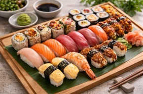
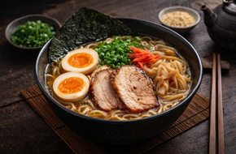
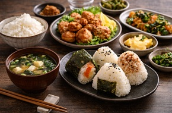

Sushi Class
Learn how to prepare sushi, including nigiri and maki rolls, using fresh ingredients.

Learn how to prepare sushi, including nigiri and maki rolls, using fresh ingredients.

Discover the secrets of traditional ramen, from broth to noodles and toppings.

Cook simple and authentic Japanese dishes such as onigiri and everyday meals.
Contact us to register.